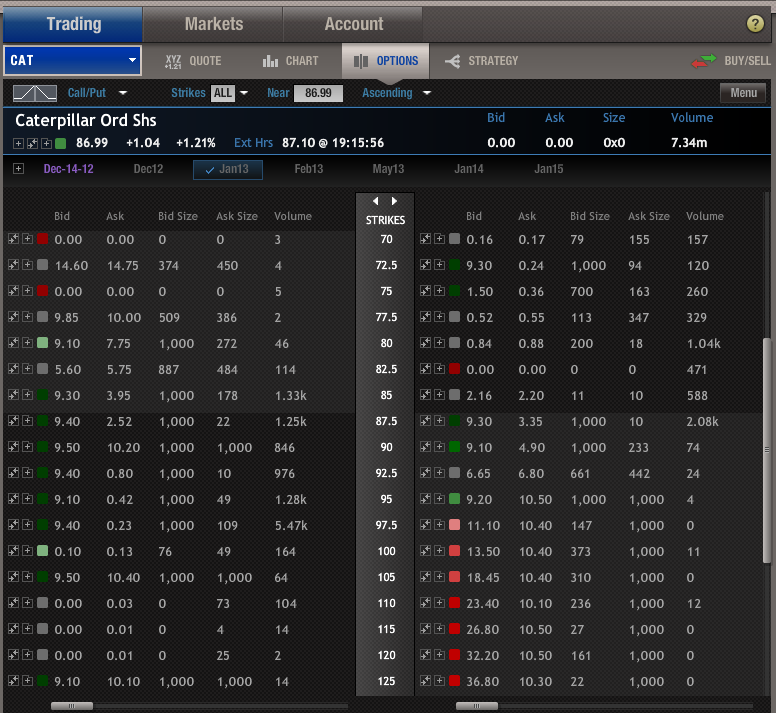

|
Quicktrade platforms (as shown below) allow you to simply type in the symbol of the security that you want to buy and the quantity of shares or contracts that you plan to trade. Then you can select:
➫ market or limit (with market orders, the market maker sets the price and it will fill right away; with limit orders, you have to set the price and the market maker may or may not accept your price and fill the order) ➫ Day or GTC (day orders are cancelled at the end of the trading period if not filled; good ‘til cancelled orders will stay on the books for days or even weeks until they get filled) ➫ margin or cash (with margin selected you are buying on credit; with cash, you must have enough cash on hand in your account to cover the cost of the purchase) ➫ regular or extended hours (with regular hours, the order will only get filled between 9:30 am - 4:00 pm Eastern time; with extended hours, your order can get filled during pre-market or after hours trading but may have a higher commission) ➫ add or delete legs (add legs allows you to trade spreads, straddles or covered positions by opening two or more positions with the same order) A quicktrade is recommended for simple trades you execute regularly and are familiar with. You must know the symbol names of the options you want trade, and you are responsible for setting up the order properly, which can be a challenge when trading complex spreads. Most brokers also offer a more robust trade platform with an intuitive UI (user interface), allowing you to simply click on the stocks and/or options you want to trade, and the strategy you want to use. Then it builds the order for you, and you simply click to confirm the trade. These advanced platforms also allow you to research as you prepare your trades, making a one-stop shop for trading. An example of TradeMonster’s UI is shown below.  |